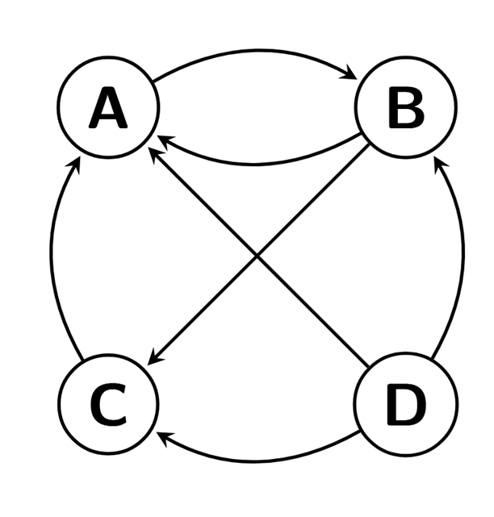
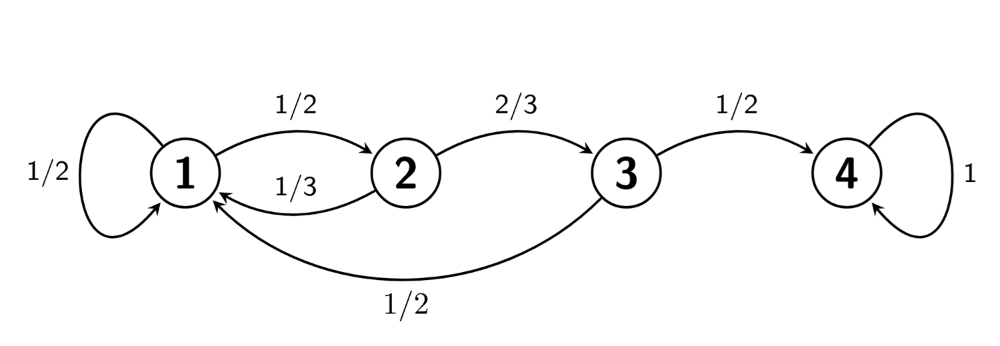
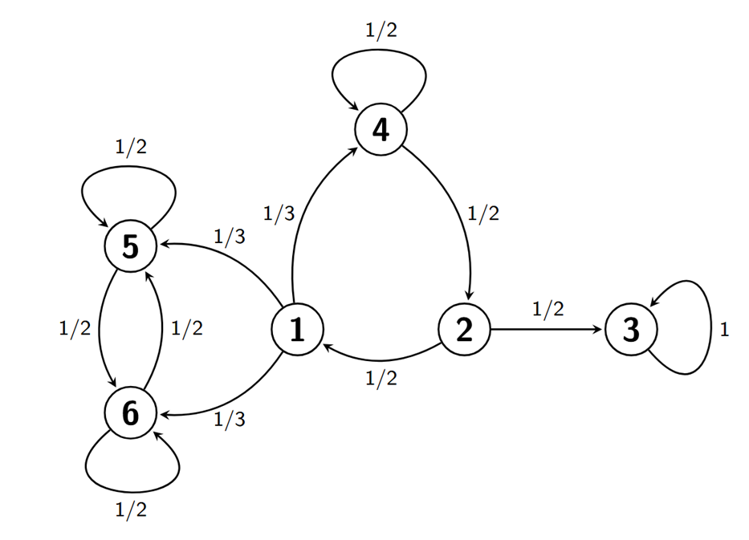
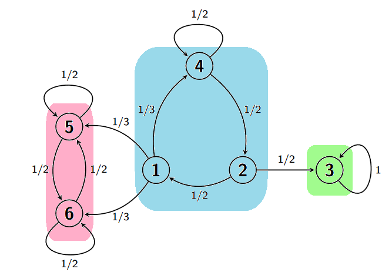
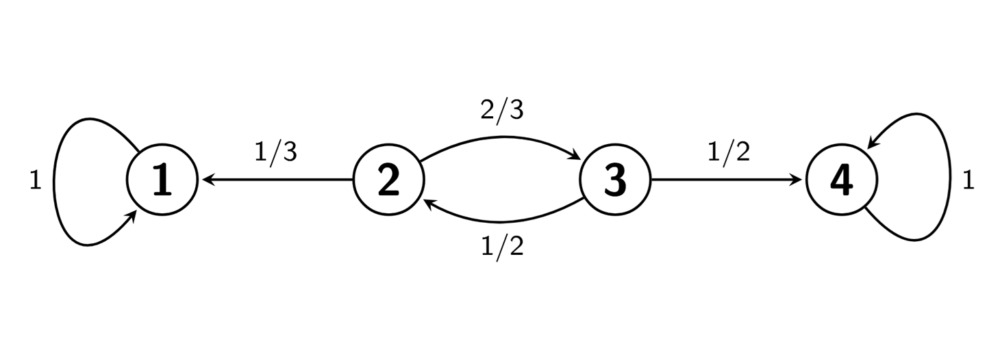
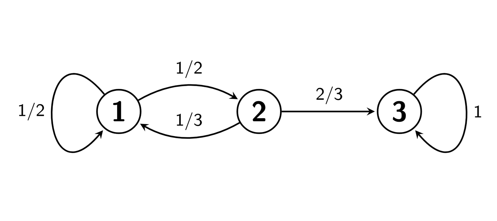

3 Tema 2. Cadenas de Markov
En este tema vamos a estudiar un tipo particular de procesos estocásticos: las cadenas de Markov. Este tipo de procesos describen cambios de estado en un sistema, con la peculiaridad de que dichos cambios dependen únicamente del estado actual del sistema y no están influenciados por ningún estado que haya tomado previamente.
Por ejemplo, imaginemos un aparcamiento y consideremos la variable \(X_n\) representando el número de plazas de aparcamiento ocupadas en cada instante de tiempo \(n\in\{0,1,2,\ldots\}\). Claramente el valor de \(X_{n+1}\) dependerá de \(X_n\) ya que \(X_{n+1}\) se obtiene de \(X_n\) sumándole los coches que han aparcado y restándole los que se han ido entre los instantes \(n\) y \(n+1\). Por tanto, conocido \(X_n\), parece razonable que la cantidad \(X_{n+1}\) no dependa de los valores previos \(X_0,X_1,X_2,\ldots,X_{n-1}\).
Este tipo de procesos, en los que el valor \(X_{n+1}\) depende exclusivamente de \(X_n\) y no se ve influenciado por los estados previos \(X_0,X_1,X_2,\ldots,X_{n-1}\) es formalizado matemáticamente mediante el concepto de cadena de Markov.
3.1 Cadenas de Markov de tiempo discreto
Definición 3.1 (Cadena de Markov) Un proceso estocástico \((X_n)_{n=0,1,2,\ldots}\) de tiempo discreto se dice que es una cadena de Markov si se verifica que
\[ \begin{aligned} \mathbb{P}\bigl(X_{n+1}=a_{n+1}\mid X_n=a_n,X_{n-1}=a_{n-1},\ldots, X_0=a_0\bigr) &= \mathbb{P}\bigl(X_{n+1}=a_{n+1}\mid X_n=a_n\bigr) \end{aligned} \tag{3.1}\]
para todo \(n\) y toda sucesión \(a_0,a_1,\ldots,a_{n+1}\) de posibles valores del proceso.
La condición (Ecuación 3.1) arriba se llama propiedad de Markov. La interpretación es que la probabilidad de cualquier valor futuro del proceso, dado el valor actual, no está influenciada por ningún valor pasado. Se dice que las cadenas de Markov son procesos estocásticos sin memoria.
Al conjunto \(\mathcal{S}\) de todos los valores posibles de la cadena de Markov se le llama espacio de estados. Como las cadenas de Markov son de tiempo y estado discretos, el espacio de estados \(\mathcal{S}\) es un conjunto finito o infinito numerable.
Definición 3.2 (Probabilidades de transición) Supongamos que \((X_n)_{n=0,1,2,\ldots}\) es una cadena de Markov con espacio de estados \(\mathcal{S}\). Las probabilidades de transición son la probabilidades \[ p_{x,y}(n)=\mathbb{P}(X_n=y\mid X_{n-1}=x), \] donde \(x,y\in\mathcal{S}\) y \(n=1,2,3,\ldots\).
Definición 3.3 (Cadena de Markov homogénea) Decimos que la cadena de Markov \((X_n)_{n=0,1,2,\ldots}\) es homogénea si las probabilidades de transición no dependen del tiempo. En tal caso, definimos
\[ \begin{aligned} p_{x,y}=&\mathbb{P}(X_n=y|X_{n-1}=x)\\ =&\mathbb{P}(X_1=y|X_{0}=x) \end{aligned} \]
donde hemos eliminado \(n\) de la notación.
En el resto de este tema vamos a trabajar con cadenas de Markov homogéneas con un número de estados finito. Por lo que a partir de ahora, cada vez que nos refiramos a una cadena estaremos hablando de una cadena de Markov con esas características.
En general, usaremos que \((X_n)_{n=0,1,2,\ldots}\) es una cadena con espacio de estados finito que denotaremos por \(\mathcal{S}=\{1,2,3,\ldots,N\}\).
Definición 3.4 (Matriz de transición) Definimos la matriz de transición de \((X_n)_{n=0,1,2,\ldots}\) como
\[ P=(p_{i,j})_{i,j=1,2,\ldots,N}= \left[ \begin{array}{cccc} p_{1,1} & p_{1,2} & \ldots & p_{1,N}\\ p_{2,1} & p_{2,2} & \ldots & p_{2,N}\\ \ldots & \ldots & \ldots & \ldots\\ p_{N,1} & p_{N,2} & \ldots & p_{N,N}\\ \end{array} \right] \]
Obsérvese que las entradas de la fila 1 describen todas las probabilidades posibles condicionadas a empezar en el estado \(i=1\). Por tanto, la suma de todas ellas debe ser igual a \(1\). Obviamente, lo mismo es cierto para el resto de filas, es decir, \(p_{i,1}+p_{i,2}+\ldots+p_{i,N}=1\) para cada \(i\). Por tanto, en una matriz de transición, la suma de todos los elementos de cualquier fila debe de ser 1. Sin embargo, esta condición no tiene por qué verificarse para las columna de una matriz de transición.
3.2 Matriz de transición de n pasos
En esta sección, sea \((X_n)_{n=0,1,2,\ldots}\) una cadena con espacio de estados \(\mathcal{S}=\{1,2,\ldots,N\}\). En general, definimos lo siguiente.
Definición 3.5 (Probabilidad de transición de n pasos) Dados dos estados \(i,j\in\mathcal{S}\), definimos la probabilidad de transición de \(n\) pasos
\[ p_{i,j}^{(n)}=\mathbb{P}(X_n=j\mid X_{0}=i). \]
Definimos la matriz de transición de \(n\) pasos de \((X_n)_{n=0,1,2,\ldots}\) como
\[ P^{(n)}=\Big(p_{i,j}{(n)}\Big)_{i,j=1,2,\ldots,N}= \left[ \begin{array}{cccc} p_{1,1}^{(n)} & p_{1,2}^{(n)} & \ldots & p_{1,N}^{(n)}\\ p_{2,1}^{(n)} & p_{2,2}^{(n)} & \ldots & p_{2,N}^{(n)}\\ \ldots & \ldots & \ldots & \ldots\\ p_{N,1}^{(n)} & p_{N,2}^{(n)} & \ldots & p_{N,N}^{(n)}\\ \end{array} \right]. \]
Para entender cómo calcular la matriz de transición de n pasos analicemos el siguiente ejemplo. Consideremos la cadena \((X_n)_{n=0,1,2,\ldots}\) dada por el grafo:

Esta cadena tiene matriz de transición
\[ P= \left[ \begin{array}{cccc} 1/2 & 1/2 & 0 & 0\\ 1/3 & 0 & 2/3 & 0\\ 1/2 & 0 & 0 & 1/2\\ 0 & 0 & 0 & 1 \end{array} \right] \]
Queremos ver lo que ocurre tras dos pasos del proceso.
Por ejemplo, veamos la probabilidad de llegar al estado 1 desde el estado 1 en dos pasos
\[ p_{1,1}^{(2)}=\mathbb{P}(111) + \mathbb{P}(121)=p_{1,1}\cdot p_{1,1} + p_{1,2}\cdot p_{2,1}=\tfrac{1}{2}\cdot\tfrac{1}{2} + \tfrac{1}{2}\cdot\tfrac{1}{3}=\tfrac{5}{12} \]
Incluyendo todos los posibles caminos, incluso aquellos que no existen en el grafo, podemos poner
\[ \begin{aligned} p_{1,1}^{(2)}&=\mathbb{P}(111) + \mathbb{P}(121)+\mathbb{P}(131)+\mathbb{P}(141)\\ &=p_{1,1}\cdot p_{1,1} + p_{1,2}\cdot p_{2,1} + p_{1,3}\cdot p_{3,1} + p_{1,4}\cdot p_{4,1}\\ &=\tfrac{1}{2}\cdot \tfrac{1}{2} + \tfrac{1}{2}\cdot \tfrac{1}{3} + 0 + 0=\tfrac{5}{12}. \end{aligned} \]
Escrito de esta manera, vemos que \(p_{1,1}^{(2)}\) es la primera entrada de la matriz \(P^2=P\cdot P\). Es más, tenemos que \(P^2=(p^{(2)}_{i,j})_{i,j\in\{1,2,3,4\}}\).
En general, tenemos lo siguiente.
Teorema 3.1 La matriz de transición de \(n\) pasos vendrá dada por \(n\)-ésima potencia de \(P\). Es decir,
\[ P^n=(p_{i,j}^{(n)})_{i,j=1,2,\ldots,N}. \]
Como consecuencia del teorema anterior, se tiene la relación:
\[ \pi^{(n)}=\pi{(0)} \cdot P^n \]
donde:
\[ \pi^{(0)}=(\pi^{(0)}_1, ...,\pi^{(0)}_N) \]
denota el vector de probabilidades iniciales de cada estado, es decir, \(\pi^{(0)}_j=\mathbb{P}(X_0=j)\) y
\[ \pi^{(n)}=(\pi^{(n)}_1, ...,\pi^{(n)}_N) \]
denota el vector de probabilidades de cada estado en el instante \(n\), es decir, \(\pi^{(n)}_j=\mathbb{P}(X_n=j)\), para todo \(j=1,2,...,N\).
Teniendo en cuenta el teorema anterior junto al hecho de que \(P^{m+n}=P^m P^n\), tenemos lo siguiente.
Corolario 3.1 (Ecuaciones de Chapman-Kolmogorov) \[ p_{i,j}^{(n+m)}=\sum_{k=1}^N p_{i,k}^{(n)} p_{k,j}^{(m)}. \]
3.3 Clasificación de los estados
Sea \((X_n)_{n=0,1,2,\ldots}\) una cadena con espacio de estados \(\mathcal{S}\). Dados dos estados \(x,y\in\mathcal{S}\), definimos \[ r_{x,y}=\mathbb{P}(X_n=y\mbox{ para algún }n\ge 1\mid X_0=x). \] Esto es, \(r_{x,y}\) es la probabilidad de que la cadena alcance el estado \(y\) (en algún tiempo futuro) si la cadena se inicia en el estado \(x\).
Definición 3.6 Sean \(x,y\in\mathcal{S}\) con \(x\neq y\).
Decimos que \(y\) es accesible desde \(x\) si \(r_{x,y}>0\). En tal caso escribimos \(x\to y\).
Decimos que \(x\) se comunica con \(y\) si son accesibles entre sí (es decir, \(x\to y\), \(y\to x\)). En tal caso escribimos \(x\leftrightarrow y\).
Por convenio, se considera que cualquier estado \(x\) es accesible desde sí mismo (\(x\to x\)), y que se comunica consigo mismo (\(x\leftrightarrow x\)), incluyendo el caso de que \(r_{x,x}=0\).
Cada cadena puede ser representada con un grafo. Podemos ver la accesibilidad simplemente observando si en el grafo existe un camino desde \(x\) hasta \(y\) respetando la dirección de las flechas. Cuando haya caminos en ambas direcciones, significará que ambos estados se comunican.
Por ejemplo, consideremos la cadena dada por el grafo en la Figura Figura 3.1. Vemos por ejemplo que \(1\to 3\) ya que podemos ir desde 1 hasta 3, siguiendo la dirección de las flechas, pasando por 4 y 2. Sin embargo, \(3 \nrightarrow 1\), ya que de 3 sólo se puede volver a saltar a sí mismo. Por otro lado, \(1\leftrightarrow 2\) ya que podemos conectar ambos estados por caminos tanto empezando en 1 como empezando en 2.

En general, si un estado \(y\) es accesible desde un estado \(x\), siempre será posible encontrar un camino desde \(x\) hasta \(y\) de modo que dicho camino no pase por un mismo estado dos veces. Para ello, basta considerar cualquier camino desde \(x\) hasta \(y\), y si algún estado \(z\) aparece dos veces en el camino, eliminamos el tramo del camino desde la primera aparición de dicho estado hasta la última aparición del mismo, de modo que aparezca una sola vez. Dicho camino, al no pasar dos veces por un mismo estado, tendrá como mucho tantos pasos como estados tenga la cadena. En definitiva, tenemos lo siguiente.
Proposición 3.1 Supongamos que el espacio de estados \(\mathcal{S}\) tiene \(N\) elementos. Entonces,
\[ x\to y\quad\mbox{ si, y sólo si, }\quad p_{x,y}^{(n)}>0\mbox{ para algún }n\le N. \]
La relación entre estados definida por la propiedad de estar comunicados es una relación de equivalencia. Es decir, tenemos lo siguiente.
Proposición 3.2 Sean \(x,y\in\mathcal{S}\) dos estados. Se verifican las siguiente propiedades:
\(x\leftrightarrow x\).
Si \(x\leftrightarrow y\) entonces \(y\leftrightarrow x\).
Si \(x\leftrightarrow y\) e \(y \leftrightarrow z\), entonces \(x \leftrightarrow z\).
En una cadena, siempre podemos agrupar los estados en clases de modo que dos estados en una misma clase estén comunicados y elementos de clases distintas no estén comunicados. Más específicamente, tenemos lo siguiente.
Proposición 3.3 Dado el espacio de estados \(\mathcal{S}\), siempre es posible dividirlo en clases disjuntas \[ \mathcal{S}=C_1\cup C_2\cup\ldots\cup C_n \tag{3.2}\]
donde para todo \(x,y\in\mathcal{S}\) se verifica \[x\leftrightarrow y\quad\mbox{ si }x,y\in C_i,\] \[x\nleftrightarrow y\quad\mbox{ si }x\in C_i\mbox{, }y\in C_j,\: i\neq j.\]
Las clases en (Ecuación 3.2) se llaman clases irreducibles. La proposición anterior nos dice que cada cadena admite siempre una descomposición en clases irreducibles. Una cadena se dice que es irreducible si sólo posee una clase irreducible, es decir, todos sus estados se comunican entre sí.
Las clases irreducibles pueden ser fácilmente identificadas mirando el grafo de la cadena. Observando de nuevo el grafo de la cadena en la Figura Figura 3.1, vemos que \(1\to 5\) pero \(5 \nrightarrow 1\), por lo que están en clases diferentes. Por otro lado, \(1\to 4\), \(4\to 2\), \(2\to 1\), por lo que están en la misma clase. Finalmente, \(3\) no está comunicado con nadie, luego forma él solo una clase. En la Figura Figura 3.2, podemos ver las tres clases irreducibles de la cadena que hemos identificado.

A continuación vamos a introducir un criterio para clasificar los distintos estados de una cadena.
Definición 3.7 Sea \(x\in\mathcal{S}\).
Decimos que \(x\) es recurrente si \(r_{x,x}=1\).
Decimos que \(x\) es transitorio si \(r_{x,x}<1\).
Decimos que \(x\) es absorbente si \(p_{x,x}=1\).
Si \(x\) es recurrente, tendremos que una vez que la cadena alcanza el estado \(x\) entonces tendremos total certeza de que volverá a alcanzar el estado \(x\) en el futuro.
Si \(x\) es transitorio, tendremos que una vez que la cadena alcanza el estado \(x\) entonces no tendremos certeza de que la cadena vuelva a alcanzar el estado \(x\) de nuevo.
Si \(x\) es absorbente, tendremos que una vez que la cadena alcanza el estado \(x\) con toda certeza permanezca en el estado \(x\) en el futuro. En particular, todo estado absorbente es también recurrente.
Mirando de nuevo al grafo de la Figura Figura 3.2 arriba, vemos que el estado 3 es absorbente (y por tanto recurrente), ya que si comenzamos en él sólo llegaremos a él mismo. Los estados 5 y 6 son recurrentes. Por ejemplo, vemos que si empezamos en 5 no podremos llegar a ningún otro estado excepto 6 y él mismo. Además, la única manera para que, empezando en 5, no se vuelva a visitar 5 es que la cadena se cambie al estado 6 y permanezca en ese estado en lo sucesivo. Pero la probabilidad de que eso ocurra es \(\frac{1}{2}\cdot \frac{1}{2}\cdot \frac{1}{2}\cdot \ldots=0\). Así que, con probabilidad 1 se volverá en algún momento a 5, y por lo tanto es recurrente. El mismo argumento es aplicable a 6. Finalmente, los estados 1, 2 y 4 son transitorios ya que desde esos estados se accede a zonas de las que no se puede volver.
A continuación, enunciamos, sin demostración, algunos resultados sobre el comportamiento de los estados recurrentes.
Teorema 3.2 Si \(x\to y\) y \(x\) es recurrente, entonces \(y\) también es recurrente y, además, \(r_{x,y}=1=r_{y,x}\).
El teorema de arriba nos dice que si \(y\) es accesible desde un estado recurrente, entonces se realizarán viajes de ida y vuelta entre \(x\) e \(y\), una y otra vez.
Teorema 3.3 Toda cadena de Markov homogénea posee al menos un estado recurrente.
Como consecuencia de los dos teoremas anteriores tenemos.
Corolario 3.2 Todos los estados de una cadena de Markov irreducible son recurrentes. Además, \(r_{x,y}=1\) para cualesquiera dos estados \(x,y\) de la cadena.
En el caso de cadenas no irreducibles tendremos los siguiente.
Corolario 3.3 Supongamos que una cadena de Markov tiene descomposición en clases irreducibles
\[ C_1\cup C_2\cup \ldots \cup C_n. \]
Entonces si existe \(x\in C_i\) el cual es recurrente (resp. transitorio), entonces todos los \(y\in C_i\) son también recurrentes (resp. transitorios).
Obsérvese que, en la Figura Figura 3.2 arriba, los estados 1, 2 y 4 están todos en una misma clase y son transitorios; los estados 5 y 6 están los dos en una misma clase y son recurrentes; finalmente, el estado 3 es absorbente y formará él solo una clase irreducible.
En las cadenas de Markov frecuentemente se observan patrones cíclicos, donde una sucesión de estados se recorre en un camino en forma de bucle empezando y acabando en un mismo estado. Esto da lugar al siguiente concepto.
Definición 3.8 (Periodo) Un estado \(x\in\mathcal{S}\) se dice que tiene periodo \(d\) si \(p^{(n)}_{x,x}=0\) para todo \(n\) que no sea divisible por \(d\), y además \(d\) es el mayor número con esta propiedad. En el caso de que \(p^{(n)}_{x,x}=0\) para todo \(n\) (es decir, si \(r_{x,x}=0\)), entonces diremos que el periodo de \(x\) es infinito. Un estado \(x\) con periodo 1 se dice que es aperiódico.
En otras palabras, un estado \(x\) tiene periodo \(d\) si la cadena puede volver al estado \(x\) sólo en un número de pasos que sea múltiplo de \(d\). En el caso de que la cadena no vuelva nunca más a \(x\), el periodo es infinito.
Una importante propiedad es la siguiente.
Si \(x\leftrightarrow y\), entonces \(x\) e \(y\) tienen el mismo periodo.
Por definición en una cadena irreducible todos los estados se comunican, por lo que tenemos lo siguiente.
Corolario 3.4 En una cadena irreducible todos los estados tienen el mismo periodo.
Dado que todos los estados de una cadena irreducible tienen el mismo periodo, tiene sentido introducir lo siguiente.
Definición 3.9 Se dice que una cadena irreducible tiene periodo \(d\) si uno de sus estados (y por tanto todos) tienen periodo \(d\). Se dice que una cadena es aperiódica si uno de sus estados (y por tanto todos) es aperiódico.
En el caso de cadenas no irreducibles tendremos los siguiente.
Corolario 3.5 Supongamos que una cadena de Markov tiene descomposición en clases irreducibles \[ C_1\cup C_2\cup \ldots \cup C_n. \] Todos los estados pertenecientes a una misma clase \(C_i\) tienen el mismo periodo.
Veremos más adelante que conocer si una cadena irreducible es aperíodica es importante en el estudio límite de las cadenas de Markov. Para determinar si un estado es aperiódico aplicaremos un simple método que explicaremos a continuación.
Recuerda que dos números n y m son coprimos si su máximo común divisor es 1. Supongamos que podemos encontrar dos números coprimos \(n\) y \(m\) tal que \(p_{x,x}^{(n)}>0\) y \(p_{x,x}^{(m)}>0\). En este caso, por definición de periodo, \(d\) debe dividir a \(n\) y \(m\). Como \(n\) y \(m\) son coprimos, necesariamente tendremos que \(d=1\). Por tanto, para determinar si un estado \(x\) es aperiódico, trataremos de buscar en el grafo dos caminos de \(x\) en sí mismo de modo que los números de pasos dados en sendos caminos sean coprimos.
Para ilustrar este método, volvamos al ejemplo en la Figura Figura 3.2 arriba. Claramente el estado 3 es aperiódico por ser absorbente. Por otro lado, partiendo del estado 1, podremos volver a dicho estado en tres pasos siguiendo el camino \(1\to 4 \to 2 \to 1\). Pero, partiendo de 1, también podemos volver a \(1\) en cuatro pasos a través del camino \(1\to 4 \to 4 \to 2 \to 1\) en el que pasamos dos veces por 4. Como 3 y 4 son coprimos, necesariamente tendremos que el estado 1 es aperiódico. Además, los estados 2 y 4 también serán aperiódicos por estar en la misma clase irreducible que 1. Un argumento similar muestra que los estados 5 y 6, los cuales están en la misma clase irreducible, son aperiódicos también.
3.4 Número de visitas
En esta sección vamos a estudiar el número medio de veces que una cadena de Markov alcanza un estado determinado a lo largo del tiempo. En lo que sigue consideramos una cadena \((X_n)_{n=0,1,2,\ldots}\) con espacio de estados \(\mathcal{S}\). Dado \(x\in\mathcal{S}\), la probabilidad de que la cadena vuelva a \(x\) habiendo empezando en \(x\) es \(r_{x,x}\). Por tanto, si empezamos en \(x\), la probabilidad de no volver nunca más a \(x\) es \(1-r_{x,x}\). Teniendo en cuenta ambas cosas, tenemos que \[ \mathbb{P}(\mbox{``visitar $x$ exactamente $k$ veces''}|X_0=x)=r_{x,x}^k(1-r_{x,x}), \tag{3.3}\] donde no estamos contando la visita a \(x\) en tiempo \(0\).
A partir de (Ecuación 3.3), vemos que el número de visitas a \(x\) partiendo de \(x\) sigue una distribución Geométrica de parámetro \(p=1-r_{x,x}\). En particular, el número esperado de visitas a \(x\) si salimos de \(x\) es \[ \mathbb{E}(\mbox{``número de visitas a $x$''}\mid X_0=x)=\frac{r_{x,x}}{1-r_{x,x}}. \] Además, la expresión arriba es finita si, y sólo si, \(r_{x,x}<1\), en cuyo caso \(x\) es transitorio. En caso contrario, tendremos un estado recurrente y el número esperado de visitas será infinito.
Consideremos ahora un estado \(y\) distinto de \(x\), de modo que \(y\) es accesible desde \(x\). Queremos calcular ahora el número medio de visitas a \(y\) empezando en \(x\). Si partimos de \(x\), tenemos dos posibilidades, o bien la cadena alcanza el estado \(y\) produciendose al menos una visita, lo cual ocurre con probabilidad \(r_{x,y}\); o bien no lo visita nunca, lo cual ocurre con probabilidad \(1-r_{x,y}\). De esta manera, el número esperado de visitas a \(y\) si salimos de \(x\) es \[\begin{align*} \mathbb{E}(\mbox{``número de visitas a $y$''}|X_0=x)&=r_{x,y}\cdot\Big(1+ \mathbb{E}(\mbox{``número de visitas a $y$ con $n>1$''}|X_1=y)\Big) + (1-r_{x,y})\cdot 0\\ &=r_{x,y}\left(1+ \frac{r_{y,y}}{1-r_{y,y}}\right)\\ &=\frac{r_{x,y}}{1-r_{y,y}}. \end{align*}\] De nuevo podemos observar que la esperanza anterior es finita si, y sólo si, \(r_{y,y}<1\), en cuyo caso \(y\) es transitorio.
Resumimos los resultados obtenidos en el siguiente enunciado.
3.5 Número de visitas
Supongamos que \(x,y\) son dos estados (posiblemente iguales) de modo que \(x\to y\). Entonces,
\[ \mathbb{E}(\mbox{``número de visitas a $y$''}\mid X_0=x)=\frac{r_{x,y}}{1-r_{y,y}}. \]
Además, la esperanza anterior es finita si y sólo si \(y\) es transitorio.
3.6 Probabilidades de absorción y tiempos medios de llegada
Cuando se estudian las cadenas de Markov, es habitual preguntarse por la probabilidad de que la cadena alcance cierto estado absorbente y también por el tiempo medio en el que se alcanza dicho estado. Por ejemplo, en el caso de la ruina del jugador, podríamos plantearnos cómo de probable es alcanzar las ganancias que el jugador ha fijado antes de retirarse, cuál es la probabilidad de arruinarse, o cuánto tiempo tardarán en producirse dichos sucesos. A continuación, introduciremos los conceptos de probabilidad de absorción y tiempo medio de llegada, y veremos cómo se calculan.
3.6.1 Probabilidades de absorción
Supongamos que tenemos una cadena con todos sus estados transitorios o absorbentes. Por ejemplo, supongamos que tenemos la cadena dada el siguiente grafo:

Esta cadena tiene matriz de transición
\[ P= \left[ \begin{array}{cccc} 1 & 0 & 0 & 0\\ 1/3 & 0 & 2/3 & 0\\ 0 & 1/2 & 0 & 1/2\\ 0 & 0 & 0 & 1 \end{array} \right]. \]
Por otro lado, en dicha cadena encontramos tres clases irreducibles: En primer lugar una clase \(C_1\) formada por sólo el estado absorbente 1, una clase \(C_2\) con los estados transitorios 2 y 3, y una clase \(C_3\) con sólo el estado absorbente 4.
Nos planteamos calcular las probabilidades de que cualquier estado sea absorbido por el estado absorbente 1. En concreto, dependiendo de que la cadena de Markov se encuentre en 1, 2, 3, o 4, las probabilidades de absorción en 1 vendrán dadas por \(r_{1,1}\), \(r_{2,1}\), \(r_{3,1}\), o \(r_{4,1}\), respectivamente.
Claramente, \(r_{1,1}=1\) y \(r_{4,1}=0\). Para encontrar \(r_{2,1}\) procedemos como sigue. Puesto que desde el estado 2 se accede, en un solo paso, al estado 1 o al estado 3, tendremos
\[r_{2,1}=p_{2,1}r_{1,1} + p_{2,3}r_{3,1}=\frac{1}{3}r_{1,1}+\frac{2}{3}r_{3,1}.\]
Por otro lado, para hallar \(r_{3,1}\), usamos que desde el estado 3 se accede, en un solo paso, al estado 4 o al estado 2. De este modo
\[r_{3,1}=p_{3,4}r_{4,1} + p_{3,2}r_{2,1}=\frac{1}{2}r_{4,1}+\frac{1}{2}r_{2,1}.\]
Poniendo todo junto, tenemos el siguente sistema de ecuaciones
\[ \begin{cases} r_{1,1}&=1,\\ r_{2,1}&=\frac{1}{3}r_{1,1}+\frac{2}{3}r_{3,1},\\ r_{3,1}&=\frac{1}{2}r_{4,1}+\frac{1}{2}r_{2,1},\\ r_{4,1}&=0. \end{cases} \]
Resolviendo el sistema anterior obtenemos
\[r_{1,1}=1,\quad r_{2,1}=\frac{1}{2},\quad r_{3,1}=\frac{1}{4},\quad r_{4,1}=0.\]
Con una argumentación similar, es posible encontrar las probabilidades \(r_{1,4}\), \(r_{2,4}\), \(r_{3,4}\), o \(r_{4,4}\) de ser absorbido en el estado 4 si la cadena se encuentra en 1, 2, 3, o 4, respectivamente. ¿Puedes hallar dichas probabilidades?
Con una argumentación similar, es posible encontrar las probabilidades \(r_{1,4}\), \(r_{2,4}\), \(r_{3,4}\), o \(r_{4,4}\) de ser absorbido en el estado 4 si la cadena se encuentra en 1, 2, 3, o 4, respectivamente. ¿Puedes hallar dichas probabilidades?
En general, si \((X_n)_{n=0,1,2,\ldots}\) es una cadena con todos sus estados absorbentes o transitorios, entonces las probabilidades de absorción de un estado absorbente \(a\in\mathcal{S}\) se pueden calcular usando que:
\(r_{a,a}=1\),
\(r_{x,a}=0\) para cualquier otro estado absorbente \(x\in\mathcal{S}\),
para cualquier estado transitorio \(x\in\mathcal{S}\),
\[ r_{x,a}=\sum_{y\in \mathcal{S}} p_{x,y} r_{y,a}. \]
3.6.2 Tiempos medios de llegada
Supongamos que tenemos ahora una cadena con un solo estado absorbente y todos los demás transitorios. Por ejemplo, consideremos la cadena dada por el grafo

Definimos \(\tau_{1,3}\) como el número de pasos promedio necesarios para alcanzar estado absorbente 3 partiendo de 1, es decir,
\[ \tau_{1,3}=\mathbb{E}[\mbox{``Número de pasos hasta la primera visita a $3$''}|X_0=1]. \]
Del mismo modo, podemos definir \(\tau_{2,3}\) y \(\tau_{3,3}\).
Obviamente \(\tau_{3,3}=0\). Para calcular \(\tau_{1,3}\), tenemos que tener en cuenta que, si la cadena se encuentra en el estado \(1\), en el primer paso dado o bien vuelve al estado 1, o bien va al estado 2. De esa manera,
\[ \tau_{1,3}=1+p_{1,1}\tau_{1,3} +p_{1,2}\tau_{2,3}=1+\frac{1}{2}\tau_{1,3} +\frac{1}{2}\tau_{2,3}. \]
Si estamos en el estado 2, daremos el primer paso o bien a 1, o bien a 3. Luego,
\[ \tau_{2,3}=1+p_{2,1}\tau_{1,3} +p_{2,3}\tau_{3,3}=1+\frac{1}{3}\tau_{1,3} +\frac{2}{3}\tau_{3,3}. \]
Poniendo todo junto, obtenemos el siguiente sistema de ecuaciones
\[ \begin{cases} \tau_{1,3}&=1+\frac{1}{2}\tau_{1,3} +\frac{1}{2}\tau_{2,3},\\ \tau_{2,3}&=1+\frac{1}{3}\tau_{1,3} +\frac{2}{3}\tau_{3,3},\\ \tau_{3,3}&=0. \end{cases} \]
Resolviendo el sistema anterior, obtenemos
\[ \tau_{1,3}=\frac{9}{2},\quad \tau_{2,3}=\frac{5}{2},\quad \tau_{3,3}=0. \]
En general, si \((X_n)_{n=0,1,2,\ldots}\) una cadena con un solo estado absorbente \(a\in\mathcal{S}\) y todos los demás estados transitorios, entonces los tiempos medios de llegada a \(a\in\mathcal{S}\) se pueden calcular usando que:
\(\tau_{a,a}=0\),
para cualquier estado \(x\in\mathcal{S}\) distinto de \(a\),
\[ \tau_{x,a}=1+\sum_{y\in \mathcal{S}} p_{x,y} \tau_{y,a}. \]
3.7 Comportamiento asintótico
Como hemos visto, en una cadena irreducible, todos los estados son recurrentes. Tenemos que es posible pasar de cualquier estado a cualquier otro. De hecho la cadena pasará infinitas veces por todos los estado con probabilidad 1. Nos preguntamos sobre cuál es la probabilidad de que a largo plazo la cadena se encuentre en un estado particular. En otras palabras, queremos saber con qué frecuencia la cadena visitará dicho estado a medida que avanzamos en el tiempo.
En lo que sigue, consideramos una cadena \((X_n)_{n=0,1,2,\ldots}\) irreducible con espacio de estados \(\mathcal{S}=\{1,2,\ldots,N\}\).
Para cada \(n=0,1,2,\ldots\) y \(j\in \mathcal{S}\) consideramos la probabilidad de que la cadena se encuentre en el estado \(j\) en \(n\) pasos, es decir,
\[ \pi^{(n)}_j=\mathbb{P}(X_n=j). \]
De hecho podemos considerar el vector
\[\pi^{(n)}=(\pi^{(n)}_1, \pi^{(n)}_2,\ldots, \pi^{(n)}_N).\]
Al considerar la probabilidad de \(n\) pasos para todos los posibles estados, el vector \(\pi^{(n)}\) verificará además que sus componentes suman \(1\), es decir, \(\sum_{j=1}^N \pi^{(n)}_j=1\).
Dado un estado \(j\in\mathcal{S}\), teniendo en cuenta la probabilidad de empezar en cada uno de los estados, tendremos que
\[ \begin{aligned} \pi^{(n)}_j&=\sum_{i=1}^N \mathbb{P}(X_0=i)\cdot \mathbb{P}(X_n=j|X_0=i)\\ &=\sum_{i=1}^N \pi^{(0)}_i\cdot p^{(n)}_{i,j}. \end{aligned} \]
Lo cual conduce a la siguiente ecuación matricial
\[ \begin{aligned} \pi^{(n)}=\pi^{(0)} \cdot P^n. \end{aligned} \tag{3.4}\]
Supongamos que existe el límite \(\lim_{n\to\infty}\pi^{(n)}=\pi\). El vector \(\pi=(\pi_1,\pi_2,\ldots,\pi_N)\) se llama distribución límite de la cadena de Markov. Puesto que \(\sum_{j=1}^N \pi^{(n)}_j=1\), la distribución límite necesariamente verificará
\[ \sum_{j=1}^N \pi_j=1. \]
Por otro lado, usando (Ecuación 3.4), tenemos
\[ \begin{aligned} \pi&=\lim_{n\to\infty}\pi^{(n+1)}\\ &=\lim_{n\to\infty}( \pi^{(0)} \cdot P^{n+1})\\ &=(\lim_{n\to\infty} \pi^{(0)} \cdot P^{n})\cdot P \\ &=(\lim_{n\to\infty}\pi^{(n)}) \cdot P\\ &=\pi\cdot P. \end{aligned} \tag{3.5}\]
La distribución límite \(\pi\) cumple la ecuación matricial
\[ \begin{aligned} \pi=\pi\cdot P. \end{aligned} \tag{3.6}\]
Podemos interpretar esta ecuación de manera intuitiva de la siguiente forma. Supongamos que en un instante de tiempo \(n\) la variable aleatoria \(X_n\) está distribuida según \(\pi\). Al dar un paso en la cadena, la distribución de \(X_{n+1}\) será \(\pi P\). Ahora bien, si se cumple que \(\pi=\pi P\), entonces \(X_{n+1}\) sigue teniendo la distribución \(\pi\). Es decir, tras la transición la distribución no cambia. Esto significa que la cadena de Markov ha alcanzado una distribución estable en el tiempo. A una distribución \(\pi\) verificando (Ecuación 3.6) se llama distribución estacionaria de la cadena de Markov.
Hemos argumentado arriba que la distribución límite, si existe, debe cumplir las ecuaciones (Ecuación 3.5) y (Ecuación 3.6). Por otra parte, es posible demostrar que si una cadena irreducible es aperiódica entonces la distribución límite existe. Por tanto, tenemos lo siguiente.
Teorema 3.4 Supongamos que \((X_n)_{n=0,1,2,\ldots}\) es una cadena irreducible aperiódica. Entonces, la distribución límite existe y está determinada por las ecuaciones
\[ \begin{cases} \pi=\pi P,\\ \sum_{j=1}^N \pi_j=1. \end{cases} \]
De esta manera, para encontrar la distribución límite de una cadena, bastará con comprobar que la cadena es irreducible y aperiódica, lo cual garantiza la existencia de una distribución límite, y luego resolver las ecuaciones anteriores para determinarla.
3.8 Algoritmo PageRank
Volvamos al ejemplo que vimos al principio del tema donde analizamos la cadena de Markov del algoritmo PageRank de Google. Recordemos que dicha cadena describía a un “surfeador de internet” que pulsaba al azar los links de un conjunto de páginas. El algoritmo PageRank se usa para ordenar la aparición de las páginas en cada búsqueda en Google, dando preferencia a aquellas páginas cuya probabilidad sea mayor en la distribución límite. Es decir, aquellas con mayor probabilidad serán las que sean más visitadas a largo plazo.
En nuestro ejemplo, el “surfeador de la web” navega al azar entre las páginas A, B, C y D, donde:
A tiene enlace a B,
B tiene enlaces a A y C,
C tiene enlace a A,
D tienes enlaces a las otras tres páginas.
De esta manera, el espacio de estados es \(\{A,B,C,D\}\), y la matriz de transición será
\[ P= \left[ \begin{array}{cccc} 0 & 1 & 0 & 0\\ 1/2 & 0 & 1/2 & 0\\ 1 & 0 & 0 & 0\\ 1/3 & 1/3 & 1/3 & 0 \end{array} \right].\]
Como hemos dicho, estamos interesados en determinar la distribución límite de la cadena de Markov definida por el surfeador. El problema es que dicha cadena podría no ser irreducible, por lo que la distribución límite podría no existir. De hecho, en nuestro ejemplo en particular, la cadena no es irreducible ya que, si bien todas las páginas son accesibles desde D, dicha página no es accesible desde el resto de las páginas.
Para solucionar este problema, el algoritmo de PageRank supone que, en cualquier paso, el surfeador de la web se puede “aburrir”, y empezar a navegar de nuevo en cualquiera de las páginas del conjunto al azar. La probabilidad con la que, tras cada paso, el surfeador se aburre es un número fijo \(p\). A la probabilidad complementaria \(d=1-p\) se le llama factor de amortiguamiento (damping factor). Por regla general se suele tomar factor de amortiguamiento \(d=0.85\).
En nuestro caso particular, si el surfeador se encuentra, por ejemplo, en la página \(B\) podría seguir navegando y ir a cualquiera de las páginas a las que tiene enlace, es decir, A o C, o podría aburrirse y saltar a cualquiera de las páginas del conjunto A,B,C, o D.
La cadena de Markov así obtenida es irreducible ya que desde cada página se puede pasar a cualquier otra página ya que existe la posibilidad de aburrirse. Además, será aperiódica ya que dichos saltos pueden darse en un solo paso. Al ser una cadena irreducible y aperiódica tendrá una distribución límite.
Desde un punto de vista más práctico, añadir la posibilidad de que el surfeador se pueda aburrir, hace que éste no pueda quedarse “atrapado” en un grupo de páginas particular conectadas entre sí, pero no a las demás, haciendo que el algoritmo desestime otras páginas que también podrían ser importantes.
En general, supongamos que el surfeador navega al azar entre \(n\) páginas con matriz de transición \(P\). Entonces, al considerar un factor de amortiguación \(d\) obtenemos una nueva matriz de transición la cual viene dada por: \[ M=d\cdot P + (1-d)\cdot \frac{1}{n} J_n, \tag{3.7}\] donde \(J_n\) es la matriz cuadrada de tamaño \(n\) con todas sus entradas igual a 1. La nueva matriz de transición \(M\) representa que, en cada paso, con probabilidad \(d\) el surfeador actuará de acuerdo a la cadena con matriz de transición \(P\), y con probabilidad \(1-d\) el surfeador actuará de acuerdo a la cadena consisten en elegir cualquiera de las n páginas al azar, cuya matriz de transición es \(\dfrac{1}{n}J_n\).
En nuestro ejemplo, tomando \(d=0.85\), calculamos con ayuda de R la matriz de transición:
P <- rbind(c(0, 1, 0, 0),
c(1/2, 0, 1/2, 0),
c(1, 0, 0, 0),
c(1/3, 1/3, 1/3, 0))
d <- 0.85
n <- 4
M <- d*P + (1-d)*(1/n)*matrix(1, n, n)Obtenemos
\[ M= \left[ \begin{array}{cccc} 0.0375 & 0.8875 & 0.0375 & 0.0375\\ 0.4625 & 0.0375 & 0.4625 & 0.0375\\ 0.8875 & 0.0375 & 0.0375 & 0.0375\\ 0.3208333 & 0.3208333 & 0.3208333 & 0.0375 \end{array} \right]. \]
Sabemos que la cadena dada por la anterior matriz de transición posee distribución límite. Podemos calcular su valor exacto resolviendo las ecuaciones correspondientes (veremos en las prácticas cómo hacerlo fácilmente en R). Sin embargo, por comodidad aproximaremos la distribución límite mediante el cálculo de potencias de la matriz de transición. Para ello podemos implementar el siguiente método iterativo en R:
M_nueva <- M
# Fijamos un error maximo
error_max <- 10^-15
# Inicializamos la variable de error
error <- 1
while (error> error_max) {
M_nueva <- M_nueva%*%M
error <- max(abs(M_nueva - M_nueva%*%M))
}
# La solución es
M_nueva[1,][1] 0.3824972 0.3732476 0.2067552 0.0375000Obtenemos:
\[\pi_A=0.3824972,\quad \pi_B=0.3732476,\quad \pi_C=0.2067552,\quad \pi_D=0.0375.\]
Esto quiere decir que, a largo plazo, el surfeador gastará el 38.25% del tiempo en la página A; 37.32% del tiempo en la página B; 20.68% del tiempo en la página C; y el 3.75% del tiempo en la página D. Por tanto, el algoritmo PageRank ordenará las páginas en función de estas probabilidades, mostrando las páginas en el orden: A, B, C, D.